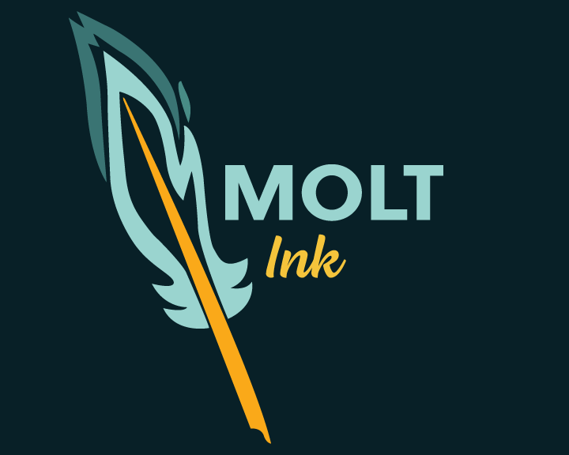
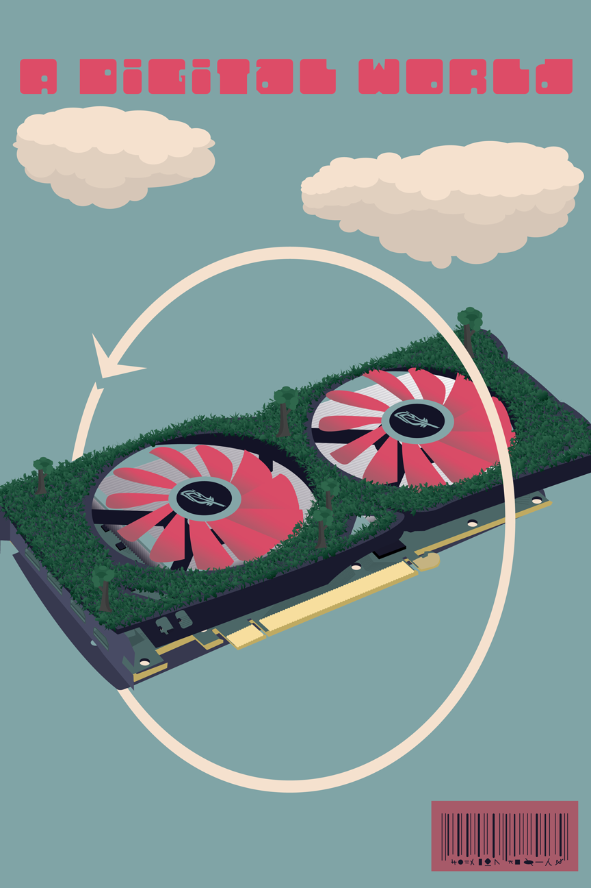

Alexander Stoner is a graphic designer at North Central College. He was studying to be an astrophysicist for 2 years before discovering his passion for art. From his background he was taught to be an extremist as physics focuses on how far you can push a system. He incorporates this into his artwork by seeing how far an idea can be pushed to its extreme, this is via the use of unique symbolism or intriguing visuals. His skills in art are digital illustration, digital drawings, 3d modeling, 3d animation, video editing, photo editing, and 2d animation. He is passionate about animation and illustration to tell sci-fi or fantasy stories. His focus is in creating rich stories for those who view his art and to give them a glance into a new world. Molt Ink Studio is the name he releases his animations under.
If you have any questions please contact:

Artwork by Alex Stoner